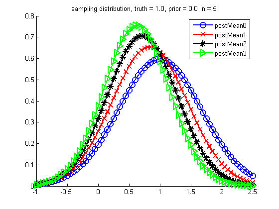
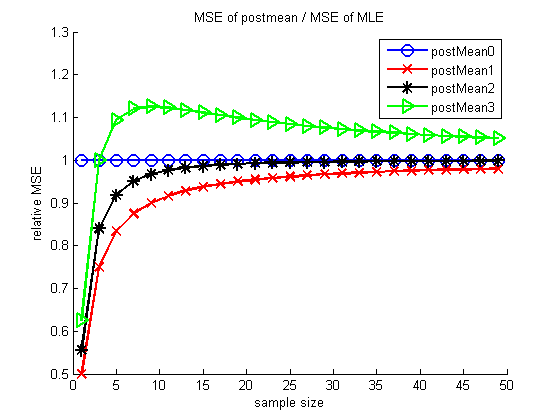

k0s = [0 1 2 3];
xrange = -1:0.05:2.5;
n = 5;
thetaTrue = 1;
sigmaTrue = 1;
thetaPrior = 0;
figure(); hold on;
[styles, colors, symbols] = plotColors();
for ki=1:length(k0s)
k0 = k0s(ki);
w = n / (n + k0);
v = w^2*sigmaTrue^2/n;
thetaEst = w*thetaTrue + (1-w)*thetaPrior
plot(xrange, gausspdf(xrange, thetaEst, sqrt(v)), styles{ki}, ...
'linewidth', 2, 'markersize', 10);
names{ki} = sprintf('postMean%d', k0s(ki));
end
title(sprintf('sampling distribution, truth = %2.1f, prior = %2.1f, n = %d', ...
thetaTrue, thetaPrior, n))
legend(names)
printPmtkFigure('samplingDistGaussShrinkage')
ns = 1:2:50;
mseThetaE = zeros(length(ns), length(k0s));
mseThetaB = zeros(length(ns), length(k0s));
for ki=1:length(k0s)
k0 = k0s(ki);
ws = (ns./(ns + k0));
mseThetaE(:,ki) = sigmaTrue^2./ns;
mseThetaB(:,ki) = ws.^2.*sigmaTrue^2./ns + (1-ws).^2*(thetaPrior - thetaTrue)^2;
end
ratio = mseThetaB ./ mseThetaE;
figure;
hold on
for ki=1:length(k0s)
plot(ns, ratio(:,ki), styles{ki}, 'linewidth', 2, 'markersize', 10);
end
legend(names)
ylabel('relative MSE');
xlabel('sample size')
title('MSE of postmean / MSE of MLE')
printPmtkFigure('relMSEgaussShrinkage')
thetaEst =
1
thetaEst =
0.8333
thetaEst =
0.7143
thetaEst =
0.6250
 